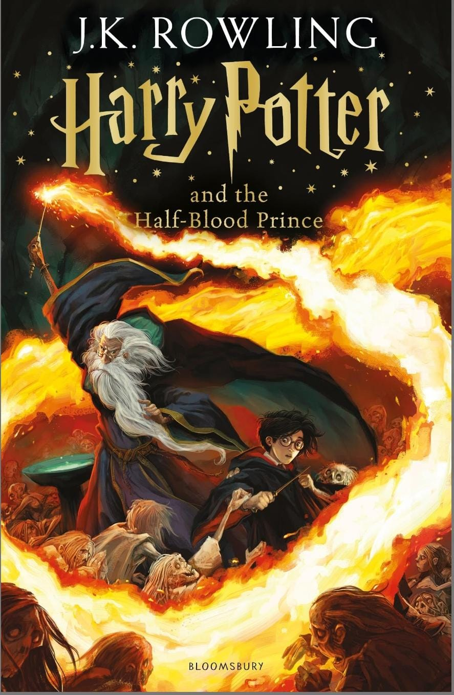

🧙♂️ Harry Potter and the Half-Blood Prince

📘 Overview
"Harry Potter and the Half-Blood Prince" is the sixth book in the Harry Potter series, and it marks a major shift in narrative focus. Instead of an external adventure or rebellion, much of this novel is introspective, dealing with memory, past choices, and the shaping of the future. While quieter than Book 5 in terms of action, it builds emotional depth, explores Voldemort’s backstory, and sets the stage for the war that will erupt in Book 7.
This is also the most mature book in tone—characters are older, romance is present, and moral complexities deepen.
🧩 Plot Summary
The wizarding world is no longer in denial—Voldemort is back, and fear grips both magical and Muggle communities. Hogwarts is no longer safe, as Death Eater attacks escalate.
Dumbledore takes Harry under his wing, offering private lessons that explore Voldemort’s early life through memories. These lessons are not magical training in a traditional sense—they’re psychological and strategic, meant to understand Voldemort’s soul, especially the creation of Horcruxes, which make him nearly immortal.
Meanwhile, Harry comes into possession of a mysterious Potions textbook marked by the “Half-Blood Prince.” The notes inside give him an academic edge, but the book’s dangerous spells hint at darker origins.
Throughout the year, Harry becomes increasingly suspicious of Draco Malfoy, convinced he has become a Death Eater. Nobody believes him—until it's too late.
The book culminates with a terrifying mission: Harry and Dumbledore retrieve a Horcrux from a cursed cave, only to return and find Hogwarts under attack. On the Astronomy Tower, Dumbledore is disarmed and killed by Severus Snape, the supposed ally.
The final shock? The Horcrux they retrieved was a fake.
🌌 Themes and Analysis
1. Memory and the Past
Dumbledore’s lessons involve visiting the memories of people who knew Voldemort before he became the Dark Lord. The past isn’t just backstory—it’s the key to defeating evil. Rowling explores how history shapes identity and the future.
2. Power and Corruption
Voldemort’s desire to conquer death through Horcruxes reveals his fear of mortality and hunger for dominance. In contrast, Dumbledore’s reluctance to seek power shows moral restraint—especially when he reveals his own temptations.
3. Love and Sacrifice
Romantic relationships come to the surface—Harry and Ginny, Ron and Hermione’s tensions, and Tonks and Lupin. But more importantly, Dumbledore’s sacrifice and Snape’s complex loyalty hint at deeper emotional and moral struggles.
4. Good vs. Evil is Not Simple
The clear lines of “good” and “bad” are blurred. Snape, long suspected by fans, finally kills Dumbledore. Draco, despite his dark mission, is unable to commit murder. Dumbledore’s flaws come into light. Nothing is black and white anymore.
🧠 Character Development
Harry Potter: Becomes more mature and calm, less impulsive than in Book 5. He steps into a leadership role and accepts his fate with courage.
Albus Dumbledore: We see Dumbledore not as a perfect headmaster but as a flawed, deeply human leader, with a tragic past and heavy burdens.
Draco Malfoy: For the first time, Draco is given depth. He struggles under Voldemort’s expectations and is clearly traumatized and afraid.
Severus Snape: His actions at the end shock readers. Killing Dumbledore brands him a villain—until the full truth is revealed in Book 7.
Ginny Weasley: Confident, strong, and independent—her relationship with Harry feels natural and emotionally earned.
Tom Riddle / Voldemort: The memories provide the most in-depth look into Voldemort’s psychology—his obsession with power, hatred of death, and inability to love.
🧱 World-Building and Lore
Horcruxes are introduced as Voldemort’s darkest secret—a way to split the soul to achieve immortality.
The Unbreakable Vow is introduced, raising the stakes in magical oaths.
The Cave scene is one of the most atmospheric and disturbing in the series—full of cursed water, Inferi, and emotional trauma.
The identity of the Half-Blood Prince adds mystery and showcases Snape’s brilliance and moral ambiguity.
🕵️♀️ Symbolism and Subtext
The Vanishing Cabinet: Represents the secret gateway that betrayal opens inside safe spaces.
The Horcruxes: Literal pieces of soul, symbolizing how evil fragments a person’s humanity.
Felix Felicis (Liquid Luck): Symbol of trust in fate vs. control; shows Harry’s growing ability to lead through others.
💔 Emotional Impact
Dumbledore’s death is a shattering loss, especially after his vulnerability in the cave.
Harry’s grief is quiet and mature—he doesn’t scream, he resolves.
The romantic moments are a rare bright spot in an otherwise tragic book, offering small rays of hope.
🏆 Strengths
>Deep psychological and emotional layers
Detailed Voldemort backstory (rare in villain arcs)
Intense finale and masterful foreshadowing
Strong character evolution
Raises moral complexity
⚠️ Criticism
Pacing can feel slow in the middle with romantic drama.
Some fans expected more action after Book 5’s chaos.
The identity of the Half-Blood Prince, while clever, doesn’t impact the main plot directly until Book 7.
🔍 Best Moments
Dumbledore’s memories of young Tom Riddle
The cave Horcrux scene (“Drink it, Harry…”)
Dumbledore’s final moments and the lighting of the wand salute
Harry’s leadership with Felix Felicis
Harry and Ginny’s kiss—earned, quiet, and sweet
⭐ Rating: 9.7/10
"Harry Potter and the Half-Blood Prince" is a masterclass in buildup. It sacrifices immediate action for emotional weight and strategic layering. It’s a book of revelations, peeling back Voldemort’s soul and Dumbledore’s secrets. The ending leaves readers shocked, grieving, and ready for the final battle.